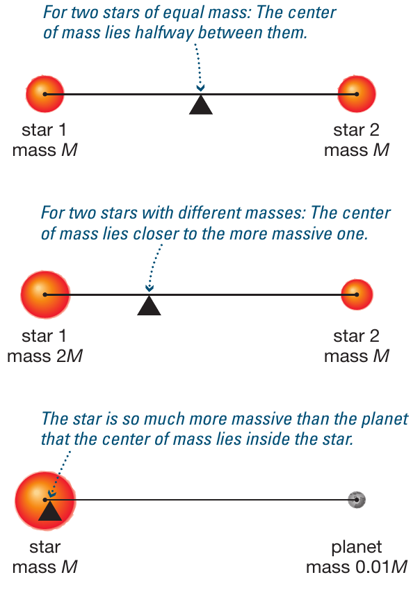
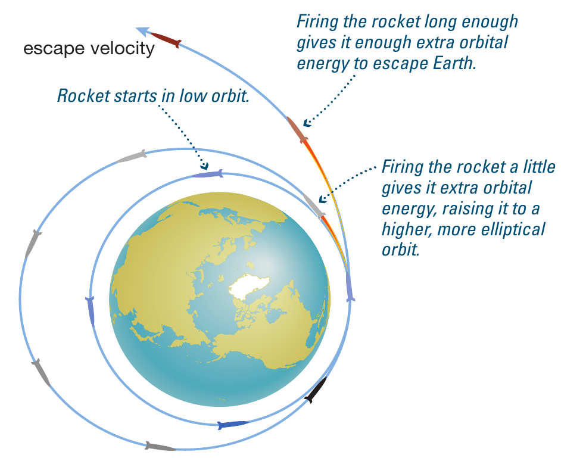
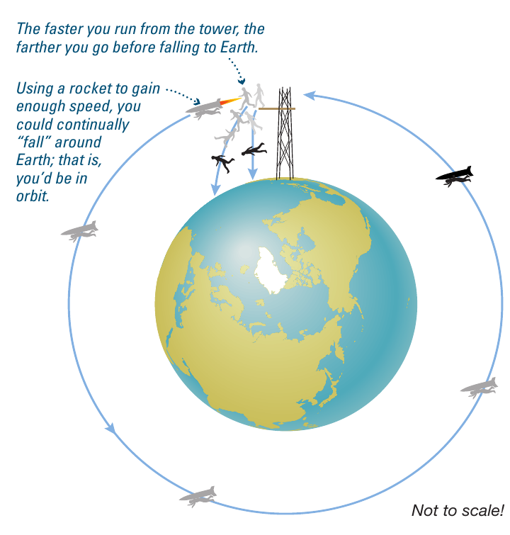
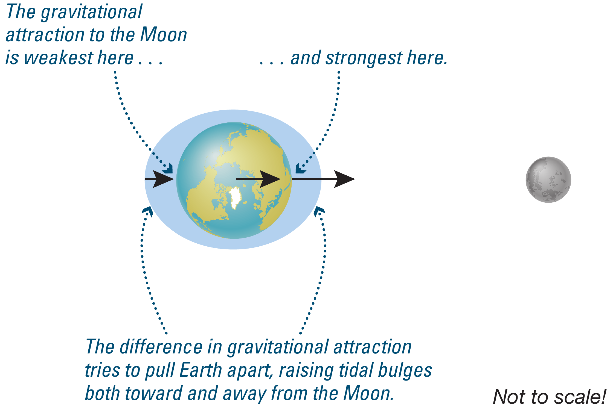
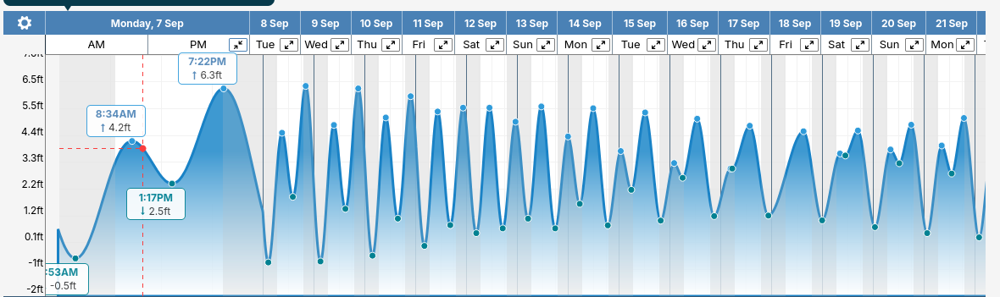
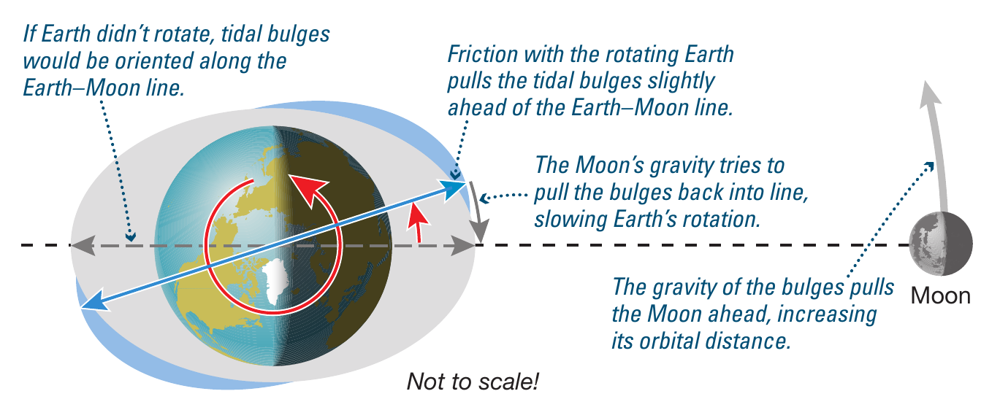

Reading: Chapter 4
TODO Recap
Top hat questions.
Example: dynamics of falling objects
\(\mathbf{F} = m\mathbf{a}\) is a vector equation. For a physics problem in three dimension treated in Cartesian coordinates, this equation is equivalent to:
Each of these have to be individually true along the \(x\), \(y\), and \(z\) directions for the vectorial equation representing Newton's second law to be valid.
Let's consider the case where \(\mathbf{F}\equiv \mathbf{F}_{\rm grav}\) is gravity, for example a ski jumper going off a ramp in absence of friction:

Let's chose a system of coordinates such that Earth's gravity is along the \(z\) direction, and the ramp is along the \(x\) direction. Then:
Since there is no force in the \(x\) and \(y\) direction (we are neglecting friction with the air and between ground and skiis), there is no acceleration (2nd Newton's laws of dynamics). But if there is no acceleration, there is by definition no change in velocity: whatever the initial velocity of the skier in the \(x\) and \(y\) direction is, it remains constant! In other words: gravity does not influence in any way the horizontal motion and by the 1st law of dynamics, a body like the skier keeps its velocity.
Gravity does act in the \(z\) direction though (the skier is going to land at some point!). Considering only the equation along this direction, we note that \(m_{\rm skier}\) appears on both sides of the equation and it is a non-zero quantity (otherwise there is no skier!), so we can divide each side by \(m_{\rm skier}\) to make it go away:
This is in fact the gravitational acceleration! Note that \(r\) here is the distance to the center of the Earth, \(r=R_{\rm Earth}+\delta r\) where \(\delta r\ll R_{\rm Earth}\) because the skier doesn't jump thousands of km high. Therefore we can also neglect the small \(\delta r\) w.r.t. \(R_{\rm Earth}\) and obtain:
which is constant (all the quantities are constant!) for small displacements w.r.t. the size of Earth (so for anything smaller than thousands of km). So the equation of motion in the vertical direction becomes:
that is the initial vertical velocity \(v_{z}(t=0)\) plus the acceleration term we just found. From the velocity we can find the position (integrating in time).
and analogously for the other directions (where \(a_{x}\) or \(a_{y}\), and or \(v_{x}\) or \(v_{y}\) may be zero!),
Example: is there gravity in space?
Netwonian's gravity says \(F_{\rm grav}\propto r^{-2}\), which means that it is non-zero everywhere! Gravity drops off quickly (power -2), but never completely. So everywhere one may look there is gravity!
Why do things float "in space" then? Actually not everything floats, things in space constantly fall onto each other because there is gravity.
What usually people think of is "why do things float in orbit?" For example, in the International Space Station:

The reason is that everything is falling at the same rate towards Earth! The astronauts, the fruits, and the ship itself are all falling at the same rate (same acceleration), and thus do not experience an acceleration relative to each other while they are all accelerating relative to Earth.
Recall that \(\mathbf{a} = d\mathbf{v}/dt \neq 0\) even if \(\mathbf{v}\) is only changing direction.
Conservation laws in physics
In my opinion, one of the most beautiful results of theoretical physics is due to Emmy Noether, which states that for every symmetry in nature, there is a corresponding conserved physical quantity.
Newton's laws are a consequence of the conservation of these physical quantities due to the symmetries of nature!
N.B.: What does it mean to be conserved for a quantity? It literally means that it does not change (in time or under certain transformation). For an example not involving time: the "shape" of an object is conserved under rotation.
Conservation of momentum
This is a consequence of the symmetry of space-time with translations (side-ways motions): the dynamics of a system, what causes its motion, does not depend on where you are, you can shift around in any direction and observe the same phenomena related to momentum.
The laws of dynamics follow from this: in absence of an external force a body maintains its velocity and its mass, therefore also its momentum \(\mathbf{p}=m\mathbf{v}\), which is conserved (1st Newton's lawnil). And if there is an external force on a body (a source term for its momentum), there is an equal and opposite force exerted by this body on the forcing agent, so that in total the net force on both body and agent is zero and the total momentum remains constant (3rd law).
Conservation of angular momentum
This is a consequence of symmetry of space-time w.r.t. rotations, and it is a vector quantity:
where \(\mathbf{p}=m\mathbf{v}\) is the momentum discussed above and \(\mathbf{r}\) is the distance to the rotation axis.
Because it is a vector, it is characterized by multiple components (\(x,y,z\)): conservation of angular momentum requires the total angular momentum to be conserved, which means also in direction and not only in amplitude.

Conservation of angular momentum examples:
- bike: if not moving (\(v=0\Rightarrow p=mv=0\)) there is no angular momentum (\(J=r\times p\equiv0\)) and it is very hard to stand on it without falling. If moving, then \(J\neq0\) needs to be constant, including in direction: it gets easier to ride without falling because to fall the direction of the angular momentum!
- ballerina: a spinning ballerina closes their arms, this decreases \(\mathbf{r}\), so to keep the angular momentum constant, the velocity \(\mathbf{v}\) has to increase.
- Earth's rotation: this carries angular momentum too, which is conserved. In absence of any perturbation, Earth would continue to rotate with the same \(\mathbf{r}\) and \(\mathbf{p}\) around the Sun (same for the Moon around the Earth, other planets, etc.)
3rd Kepler law
We can understand the 3rd Kepler's law as a consequence of angular momentum conservation: if the orbit is elliptic, then the distance planet-Sun is varying along the orbit, \(\mathrm{r} \equiv \mathrm{r}(t)\). To keep \(\mathrm{J} = \mathrm{r}\times\mathrm{p}\) constant then, also the momentum \(\mathrm{p}\equiv\mathrm{p}(t)\). Since \(\mathrm{p}=m\mathrm{v}\), and since the \(m\) of the planet does not change year-by-year, then the velocity \(\mathrm{v}\equiv\mathrm{v}(t)\): the orbital velocity of the planet cannot be constant!
Specifically, from the conservation of \(\mathrm{J}\) one finds that when \(\mathrm{r}\) is smaller (at pericenter, closer to the star), then \(\mathrm{v}\) needs to be larger: planets pass faster at their closest point to the Sun, and spend more time farther away.
Note that Kepler's 3rd law already described this empirically, but conservation of angular momentum provides the theoretical basis to understand this observed phenomenon.
Conservation of energy
This is a consequence of the symmetry of space-time for temporal translation (yesterday is the same as today).
Energy is by definition the capacity of a system to do work, where work is the product of a force \(F\) times a displacement \(d\):
Since this is a dot-product, it produces from two vectors (force and displacement) a scalar. Energy is also a scalar, and it can come in various forms
Kinetic
\(E_{\rm kin} = \frac{1}{2}mv^{2}\)
Thermal
Thermal energy is a form of kinetic energy due to the random agitation of constituents (e.g., molecules of a gas). \(E_{\rm th} = k_{b}T\)
What distinguishes the "thermal" energy is the randomness of the motion, as opposed to the ordered motion of a system: for example, throwing a ball in a direction causes an "ordered" global motion of each molecule of the ball in that direction (by throwing you gave a global kinetic energy and momentum to the ball), but every molecule is also wiggling in a random direction, often much "faster" than the global velocity, but leading to a very small displacement before molecules "bump" into each other and change their (random) direction of motion.
To calculate the "thermal velocity" (the random component of the velocity due to thermal motion), see this online tool. for example air is mostly (∼70%) made of nitrogen molecules \(\mathrm{N}_{2}\), made of two nitrogen atoms, each having a mass of \(\sim14\) atomic units (7 protons + 7 neutrons), so the molecule has a mass \(\sim28\) atomic units, or in other units, 4.651734×10−26 kg. At a room temperature of 300K, this corresponds to random velocities of the air of 516 m/s!
N.B.: the temperature measures the average kinetic energy of particles in a system due to their random motion. The thermal energy measures total energy of a system due to this, which also depends on the density of he system (think of putting your hand in an oven or in a pot of boiling water: the over is hotter, but the boiling water is denser and thus has a higher thermal energy).
Radiative
Energy in the radiation field, i.e., carried by the light (photons)
\(E_{\rm rad}=\frac{1}{3}a T^{4}\)
Potential
It comes in many form, depending on the kind of process that can release it (e.g., transform it into kinetic energy), e.g. chemical potential energy for an explosive.
For gravitational potential energy in a constant gravity \(g\) (e.g. on Earth \(g \simeq 10\,\mathrm{m\ s^{-2}}\) and \(E_{\rm pot }= mgh\)
Binding energy
The amount of energy you have to provide to a system for breaking it into its component and pull them apart at infinity, or in other words the amount of energy that had to be spent to assemble it. This concept is important because often astrophysical processes are powered by breaking objects and releasing this energy (e.g., the explosion of a star!), or viceversa a system loses energy storing it into the binding energy of something being assembled.
Rest-energy
\(E=m c^{2}\)
N.B.: In reality the formula is \(E=m\gamma c^{2}\) where \(\gamma=1/\sqrt{1-v^{2}/c^{2}}\) and \(v\) is the velocity of the object of mass \(m\) in the current reference frame.
Energy transforms from one form or the other

Orbital motion
Center of mass

For an extended body, or system of bodies, on can imagine to divide it in many pieces and calculate the "average position of each piece" weighted by the mass of each piece. This is the center of mass! For example, for the Earth+Moon system:
Center of gravity
Like mass \(m\) is different from weight \(F_{\rm grav} = mg\), the center of mass and the center of gravity are two related but different thing that coincide precisely only for constant gravity \(g\) (small displacement from Earth).
The center of gravity is the "weight-weighed average of the positions of the components of a system".
For instance, since Earth's gravity is stronger on the closer side of the Moon than the farther (because it is closer and the \(r^{-2}\) proportionality), even if the Moon were a perfectly homogeneous sphere, its center of mass and gravity would not coincide! The center of mass would be, by symmetry, in the center, while the center of gravity would be displaced towards Earth!
Escape velocity

The escape velocity is the minimum velocity a body needs to leave a body (e.g., planet Earth) without falling back to it – in Keplerian terms, to go from a stationary orbit (not moving), to an unbound orbit (parabola or hyperbole)!
It can be derived from energetic terms: what is the minimum kinetic energy to reach infinity?
The total energy of a body on Earth feeling only gravity (something like a dark matter particle!) is \(E_{\rm tot}=E_{\rm pot}+E_{\rm kin}\) and at infinity \(E_{\rm pot} \propto r^{-1} = 1/r \rightarrow 0\), so \(E_{\rm tot}(\infty)=E_{\rm kin}(\infty)\ge 0\) and the minimum total energy a body can have at infinity is zero.
So what if we are not at infinity with this energy? \(E_{\rm pot} + E_{\rm kin} = 0 \Rightarrow E_{\rm kin} = -E_{\rm pot} \rightarrow mv^{2}/2 = GM m/ r\), and \(m\) cancels out.
The escape speed does not depend on mass. Sr Doing some algebra, and assuming to be on the surface of Earth, \(r=R_{\rm Earth}\) we get
\(v_{\rm esc} = \sqrt{\frac{2GM_{\rm Earth}}{R_{\rm Earth}}} \simeq 11 \,\mathrm{km\ s^{-1}}\)
We have used implicitly Newton's laws in writing \(E_{\rm pot}=-GMm/r\).
What if I'm not that fast? Bound orbits

Tides
When considering the effect of gravity across an extended mass (i.e., whose size is not negligible compared to the size of the system), we need to consider tides due to the difference in gravitational forces across an extended body.

N.B.: Tides are not another fundamental force, but a manifestation of the (vectorial) difference between the gravitational field across points of an extended object.
Consider the simplest case of a binary system with masses \(M\) and \(m\) at a separation \(r\). For simplicity, let's assume \(M\) to be a point mass so we don't have to deal with its structure.
The gravitational force acting between the two bodies is
If the star \(m\) has a radius \(R_{\star}\), there is a difference in the gravitational force across the side facing the companion and the one facing away, hence a tidal field
If the stellar radius is much smaller than the separation (\(R_{\star}\ll r\), but still non-negligible), we can Taylor expand the parenthesis to obtain:
and thus:
To first order in \(R_{\star}/r\), the tidal forces resulting from differences in the gravitational field scale like \(\propto r^{-3}\), meaning the tidal field drops faster than the gravitational field \(\propto r^{-2}\). For wide systems tides are usually negligible (although this depends also on the masses and radii). Viceversa, for very close binaries, tides can be an important perturbation.
Note also how the tidal force is directed along the separation between the two bodies.
Tidal deformation
As a result of tidal forces, a body (e.g., the Earth) will be deformed, as shown in the figure above. The tidal "bulge" forms along the Earth-Moon orbital plane, and follows the Moon's orbital motion (\(P\sim\) month).
Because fluids are more easily deformed than solid, the tidal bulge is bigger in the oceans, while the rocky-land moves less. Every day, the rotation of the Earth (\(P\sim\) day) makes the rock "plow through" the oceanic bulges, giving high and low tide.
Since this comes from the combination of the Moon's month-long orbit and the Earth rotation, each point on Earth comes back under the same point on the Moon after 24h+ offset due to orbital motion. These two equations describe how the angle of a point on the surface of the Earth and the Moon's angle evolve in time:
A point on Earth is below the moon when these two angles differ by an integer multiple of \(2\pi\):
Substituting \(\omega_{i}= 2\pi/P_{i}\) we obtain:
So the minimum time \(t\) after which a point on Earth returns exactly under the Moon is for \(k=1\) (\(k=0\) is the starting time!), and plugging in \(P_{M}=29.5\) days and \(P_{E}=24\) h one gets t ≅ 24h 50m. Since this corresponds to a full rotation, that carries that point through both sides of the tidal bulge, it corresponds to a cycle of 2 low and 2 high tides: tide cycles have a period of 12h 25m.
N.B.: in this discussion we are neglecting the Sun's gravity! Because of the Sun, the periodicity of the tides is not perfectly regular. Other effects that matter are the local topology that modulates the flow of water (affecting speed and height of a tide).

Misalignment of the tidal bulge
So far we have thought about the Earth as a ball of rock and a watery bulgy that move relative to each other. But in reality, there will be friction between these two, which will slow down the motion.
Specifically, the friction will slow the motion of the lightest and more mobile component: the watery bulge will be dragged ahead of the Earth-Moon line by the fast rotation.
This means it will always precede the Moon, which drags it back. This interaction slowly takes angular momentum away from the Earth rotation and gives it through the Moon via torques due to the gravitational/tidal forces and slowly increases the angular momentum of the Moon, meaning widens its orbit.

N.B.: If the Earth's rotation were slower than the orbital period of the Moon, the bulge would lag, which would drain angular momentum from the orbital motion and transform it into rotational angular momentum of the Earth.
This means that earlier on the Moon was closer to Earth and it is going away!
The equilibrium situation
This lag/anticipation of the bulge is due to the mismatch between the Earth's rotation rate and the Moon's orbital period. If they were equal, then the bulge would be perfectly aligned, there would be no friction, no torques, and no angular momentum exchanges!
Therefore, the equilibrium condition seems to be to have synchronicity \(\omega_{\rm rot} \equiv \omega_{\rm orb}\), which is indeed the situation for the Moon: tidal equilibrium will evolve towards orbital synchronization!
In fact, in its past probably there was a bulge on the Moon, which transferred angular momentum until the Moon reached the tidal equilibrium continuum. This happened first for the Moon than the Earth because of its lower mass and moment of inertia (which resist change in velocity and rotational velocity respectively).
N.B.: The Earth-Moon system is just an example here. Any binary system with tides will evolve according to these forces to these conditions!